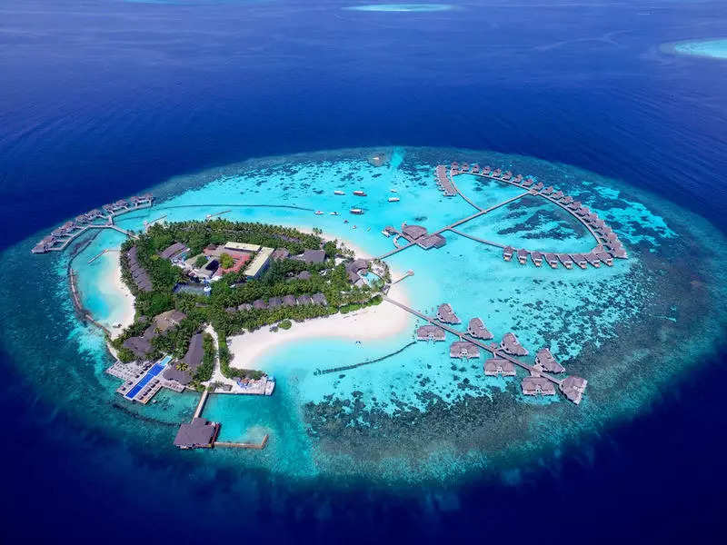

Lakshadweep
"Jewel of the Arabian Sea"
Quick Facts
Popular Tourist Attractions
Agatti Island
Known for its coral reefs and water sports.
Bangaram Island
A picturesque and secluded island paradise.
Kavaratti
Capital island with mosques and marine aquarium.
Nature & Wildlife
Coral atolls, sea turtles, butterflyfish, and coconut crabs are native to the pristine ecosystem.
Famous Personalities
- Mohammed Faizal: Member of Parliament from Lakshadweep.
- Ali Manikfan: Polyglot and ship designer known for his traditional navigation skills.
Local Handicrafts
Coir products, coconut shell crafts, and handwoven mats reflect island craftsmanship.
Climate
Tropical marine climate, warm and humid with heavy monsoon rains between June and September.
Culture & Festivals
Festivals
Uroos and Milad-un-Nabi are major Islamic festivals celebrated with great enthusiasm.

Food
Seafood is central, with dishes like coconut fish curry, fried tuna, and spiced rice.
Dance & Music
Kolkali and Parichakali are traditional folk dances performed during celebrations.
Did You Know? Lakshadweep is India’s smallest Union Territory in terms of area and population.
Note: Information may be subject to updates. Kindly notify us of any discrepancies.